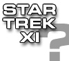
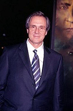
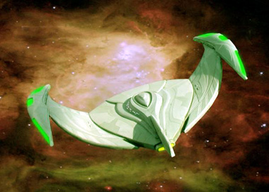
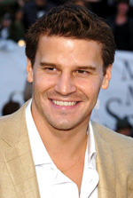

|

Publicado em 3/10/2005

O começo do fim!

| por
Gustavo Leo
 Bom, você deve estar pensando, não ? Se esse cara consegue injetar tamanho drama na Segunda Guerra Mundial, talvez ele consiga injetar este tal drama na minha Guerra Romulana, pensou Berman e seus parceiros de crime. O problema que Berman não nenhum Tom Hanks e muito menos nenhum Spielberg. Berman um bom produtor, mas tem o problema crônico de também se considerar escritor e roterista. Foi assim em Voyager e Enterprise e foi assim nos quatro filmes de cinema de A Nova Geração. Não importa se o roterista do filme um renomado indicado ao Oscar chamado John Logan ou um pobre coitado chamado Brannon Braga, lá está Berman metendo sua colher no roteiro e levando o título de co-roterista. Veja os créditos de Generations, Primeiro Contato, Insurreição e do pobre Nêmesis. Oh, meu pobre Nêmesis! Mas eu aposto que você quer saber sobre o que esse tal roteiro, não , meu caro? Baseado em notícias preliminares e fontes do site do qual eu sou editor, o TrekWeb, parece que "Star Trek: The Beginning" começa 2 anos após os eventos do penúltimo episodio de Enterprise, "Terra Prime". Ou seja, o filme se passa durante o hiato de 6 anos entre "Terra Prime" e "These Are The Voyages...", o episódio final, períiodo de tempo em que se passou a terrível guerra entre a Terra e Romulus.  E nessa guerra romulana que conhecemos os personagens do filme, uma tripulação de cadetes (ou será MACOS ?) vivida por atores mais jovens que os encontrados nas outras séries a bordo de uma nave estelar similar a NX-01, com ao que parece com o mesmo design e uniformes, mas na qual o capitão e seu oficiais não são os personagens principais do filme. O ponto mais importante da premissa o incidente que dá início a tal guerra e que levará à fundação da Federação anos no futuro. Pura especulação? Talvez. O próprio Berman já disse em entrevistas que o projeto não teve ainda a luz verde do estúdio para seguir produção, e que apenas um roteiro estava sendo desenvolvido, sendo que ainda não havia desenvolvimento no resto do projeto. Se for a verdade, Deus existe.  Fiquem ligados nesse canal, quer dizer, site. Afinal de contas, o desempregado Boreanaz precisa do cachê. Para concluir, os mais cínicos dizem que a Paramount está apenas esperando que o contrato de Mr. Berman com o estúdio acabe no ano que vem, e assim os executivos podem dar com o pé na bunda do ex-produtor e seu roterista, e assim contratar um novo produtor e dar início a um novo projeto. Quem sabe alguém com bom senso chame um produtor que entenda o gênero como Joss Whedon ou J. Michael Straczynski para dar vida nova a Jornada. Ou chamar um velho ator chamado Shatner para adaptar seu livro "O Retorno do Capitao Kirk" para a tela grande. Ou um último filme com Picard e sua tripulação, que apague a memória de Nêmesis dos nossos cérebros, ja não muito saudáveis. Como Leonard Nimoy sempre dizia, "existem sempre possibilidades"... Cruze os dedos. Eu estou cruzando os meus. |
 Quando
você pensa que Mr. Rick Berman aprendeu sua lio, cai essa bomba na sua
cabea (ei, melhor na sua do que na minha). Depois de uma década sofrível
produzindo uma Jornada nas Estrelas pobre e sem brilho, parece que Mr.
Berman quer repetir a dose por mais alguns anos. Depois de duas séries
horríveis - Voyager e Enterprise - e dois filmes que foram
verdadeiros épicos desastrosos na bilheteria - Insurreição
e Nêmesis - Berman parece querer se superar e produzir algo que faça
seus últimos fracassos se tornarem verdadeiras obras-primas aos olhos dos
trekkies e dos fãs intelectualmente dotados.
Quando
você pensa que Mr. Rick Berman aprendeu sua lio, cai essa bomba na sua
cabea (ei, melhor na sua do que na minha). Depois de uma década sofrível
produzindo uma Jornada nas Estrelas pobre e sem brilho, parece que Mr.
Berman quer repetir a dose por mais alguns anos. Depois de duas séries
horríveis - Voyager e Enterprise - e dois filmes que foram
verdadeiros épicos desastrosos na bilheteria - Insurreição
e Nêmesis - Berman parece querer se superar e produzir algo que faça
seus últimos fracassos se tornarem verdadeiras obras-primas aos olhos dos
trekkies e dos fãs intelectualmente dotados.